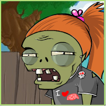

Math 615 Home
This is the course website for MATH 615 - Data Analysis for Graduate Research (Formerly known as Statistical Methods for Graduate Research) course taught by Dr. Robin Donatello in Fall 2022 at California State University, Chico.
You can toggle dark mode by clicking the button on the left sidebar.
This site is currently being revised for the Fall 22 semester.
Course Information
This course provides a hands-on introduction to using data to rigorously answer research questions. Students practice cleaning and manipulating data, creating data visualizations, and conducting introductory level statistical analysis using real-world data sets that are relevant to their field. Analysis topics include single and two-sample inference, analysis of variance, multiple regression, analysis of co-variance, experimental design, repeated measures, nonparametric procedures, and categorical data analysis. Reproducible research is strongly emphasized through the use of statistical computing software (e.g. SPSS, Stata, SAS, R, Python). Recommended for all majors that use data for research.
Instructor

My name is Robin Donatello and my pronouns are she/her. You can address me as “Robin”, “Dr. D”, or some other respectful title.
I have a Doctorate in Public Health (DrPH) Biostatistics from UCLA, but I’m a Chico State alum. I double majored in Statistics & Biology, with minor in Chemistry, and a first generation college student who started at Butte College.
My campus life consists of training the next generation of Scientists how to harness the power of Statistics and Data in a responsible and ethical manner, supporting students in their academic adventures through intensive advising, interhships and research, leading the Data Science Initiative (DSI) to develop Data Science capacity on our campus, and providing analytical support and statistical consulting for many projects on and off campus. You can learn more about the work that I do on my website
When I’m not on campus, typically I’m growing 🥕🌾🍅🍆🍏 for my family, out adventuring with my 🐶🧔🐩, or getting some 🎮🎲📚 time in.
Logistics
- Meeting Pattern: MW 4-5:30, Holt 291
- Prerequisites: Basic computer literacy. Recent statistics course such as Math 105, MATH 315, or MATH 350.
- Mode of Instruction: In Person.
- Office Location: Holt 202
- E-mail: rdonatello@csuchico.edu
- Best Contact Method: Discord
- Student Office Hours:
- MW 3-4pm in Holt 202
- During Community Coding